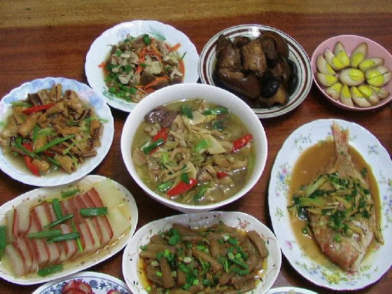
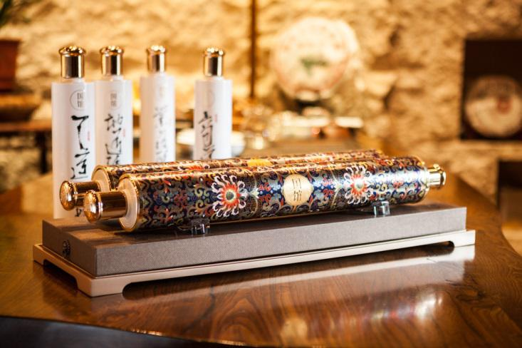
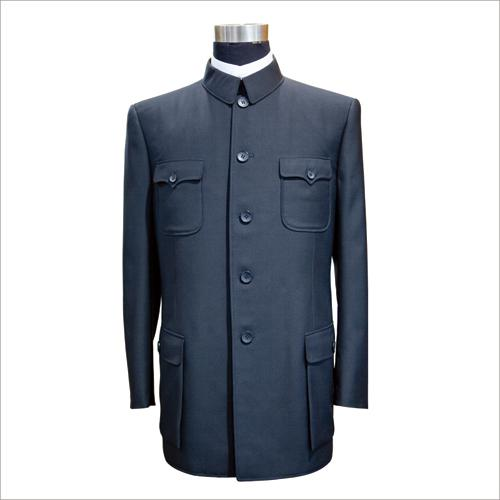

家里不一定没事，爸爸只是不想让你担心。爸爸嘴上这么说，心底却无比盼望你。常回家看看，别让爱等得太久。
不管多晚，老爸也要等你回来再吃。加班要提前告诉爸妈，不加班就尽量早点回。漂在外面的，不仅有你，还有爸爸的心。
不管多晚，老爸也要等你回来再吃。加班要提前告诉爸妈，不加班就尽量早点回。漂在外面的，不仅有你，还有爸爸的心。
老爸并不喜欢又旧又破的那几件衣服，他只是不想你为他花钱。你唯一要做的是记住老爸的身材，别买的不合身。
都说老人越老越像小孩，孤独、寂寞、迷茫，有空多陪陪老爸，像老爸小时候带你出去玩一样。
既然老爸不喜欢，为什么看到这个这么开心，又有点不舍。爸爸才没你小时候那么厚脸皮“要不要这个？”， “要”。老爸喜欢的，只会默默装在心里。
如果不需要，又何必留到今天。爸爸把最珍贵的都传了给你，一定要好好珍惜，传给下一代，这就是传承。
千万别信这句，老爸这么说一般是心疼钱或者怕麻烦。如果经常发作一定要去正规医院。记住，树欲静而风不止，子欲养而亲不待。